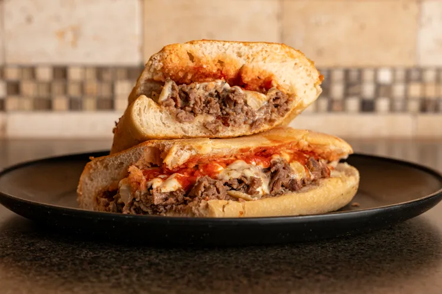

Home
Lasagna

Description
The Allrecipes community adores this lasagna recipe because it's incredibly customizable, so you can easily alter the ingredient list to suit your needs. If you want to stay true to the original recipe, though, these are the ingredients you'll need to add to your grocery list
Ingredients
- Meat
- Tomato products
- Sugar
- Spices and seasonings
- Lasagna noodles
- Cheeses
- Egg
Steps
- Make the meat sauce.
- Cook the noodles.
- Make the ricotta mixture.
- Layer the lasagna according to the recipe instructions.
- Cover with foil and bake.
- Let the lasagna rest before serving.
Crispy Buffalo Fried Chicken Sandwich

Description
This recipe makes deliciously tender and juicy fried chicken sandwiches with a bit of heat from Buffalo sauce in every bite.
Ingredients
- 3 (8 ounce) skinless, boneless chicken breast halves
- ⅔ cup buttermilk
- 1 ½ teaspoons garlic powder
- 1 cup all-purpose flour
- 1 teaspoon poultry seasoning
- ¼ teaspoon ground black pepper
- ¼ cup canola oil, or as needed
Steps
- Slice each chicken breast horizontally into 2 thin fillets. Place 6 fillets in a resealable zip-top bag with buttermilk, 1 tablespoon Buffalo sauce, and garlic powder. Seal the bag and shake to blend ingredients and evenly coat the chicken. Refrigerate for at least 2 hours or overnight.
- Preheat the oven to 350 degrees F (175 degrees C).
- Combine flour, poultry seasoning, and pepper in a shallow dish or pie plate. Blend with a fork or whisk.
- Remove chicken from the marinade and shake off excess. Dip chicken in the breading mixture until well and evenly coated on both sides. Discard the remaining marinade.
- Add enough oil to a large skillet so that it thickly coats the bottom and heat over medium-high heat until sizzling but not smoking. Place 2 chicken fillets in the skillet so they fit comfortably; do not overcrowd. Fry until crispy and golden brown, 2 to 3 minutes per side. Drain chicken on paper towels and repeat twice, adding more oil as necessary, to fry remaining chicken. Transfer chicken to a baking sheet.
Italian Grinder

Description
One of the longest standing Iowa State Fair food staples, the Italian grinder is a saucy, meaty family favorite and an easy weeknight throw-together dinner.
Ingredients
- 4 hoagie rolls
- ½ pound ground beef
- ½ pound ground hot Italian pork sausage
- 8 ounce jar pizza sauce
- 1 tablespoon minced onion
- 1 tablespoon chopped basil
- 1 teaspoon dried oregano
Steps
- Brown meats together in a pan over medium-high heat until no longer pink. Drain grease.
- Mix onion, basil, oregano, salt, pepper and red pepper flakes into pizza sauce. Add to pan of pork and beef.
- Simmer meat and sauce mixture over medium to low heat for 5 to 10 minutes, stirring regularly.
- Preheat oven to 375 F. Split the hoagie rolls open. Layer each roll with the meat and sauce mixture and mozzarella cheese. Wrap each sandwich individually in foil and bake for 15 minutes in the oven. Serve hot with banana pepper rings as an optional topping.